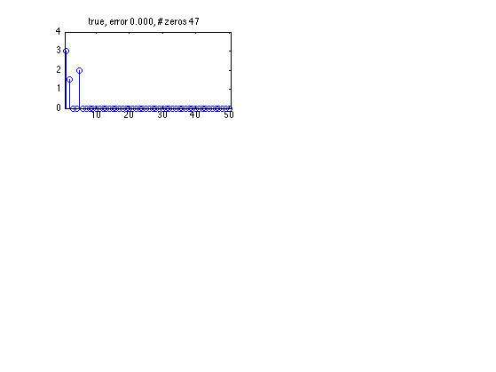
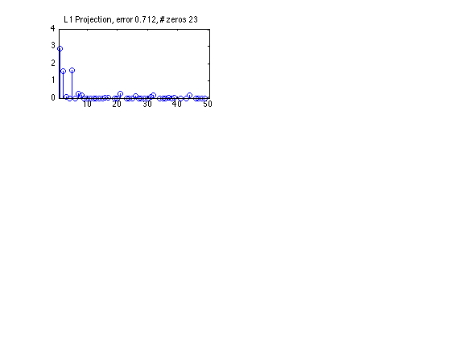

Linear Regression L1 Fit Test
Contents
function linregFitL1Test()
Make some data
setSeed(0);
N=100;
D=50;
rho=.5;
correl=zeros(D,D);
for i=1:D
for j=1:D
correl(i,j)=rho^(abs(i-j));
end
end
X=randn(N,D)*chol(correl);
w_true=[3 1.5 0 0 2 0 0 0 zeros(1,D-8)]';
sigma = 1;
y=X*w_true+1*sigma*randn(N,1);
figure; nr = 3; nc = 2;
subplot(nr, nc, 1)
doPlot(w_true, w_true, 'true')

Fit
lambda = 10;
model = linregFit(X, y, 'lambda', lambda, 'regType', 'L1', 'preproc', struct('addOnes', false));
doPlot(model.w, w_true, 'L1 Projection');

end
function doPlot(w, w_true, name)
D = length(w);
stem(w)
err=norm(w-w_true);
nz=sum(abs(w)<10^-3);
title(sprintf('%s, error %5.3f, # zeros %d', name, err, nz))
xlim([.5,D+.5]);
ylim([0 4])
end